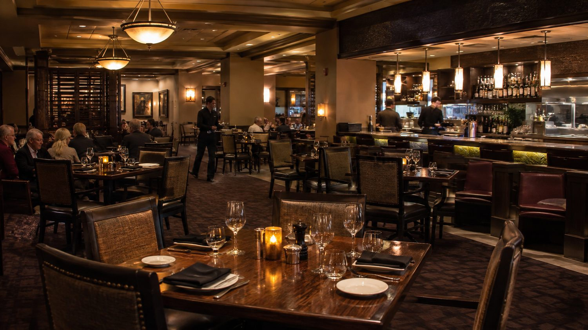
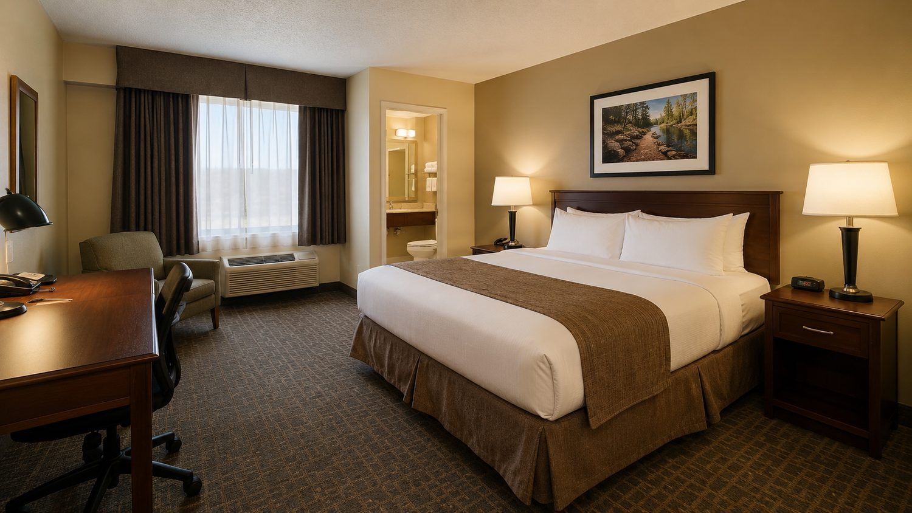

City Jackpot Casino Resort : Plancher de Jeu et Séjour à Halifax
City Jackpot Casino Resort se trouve sur le front de mer historique de Halifax, à quelques pas de la promenade du port et de plusieurs sites patrimoniaux de la ville. Une passerelle piétonnière intérieure relie l'établissement à l'hôtel voisin, ce qui permet de passer du plancher de jeu à la chambre sans mettre le nez dehors, même par mauvais temps.
19+
L'accès au plancher de jeu de City Jackpot Casino Resort est réservé aux personnes de 19 ans et plus, l'âge fixé par la Nouvelle-Écosse pour les casinos autorisés. Une pièce d'identité avec photo est vérifiée à l'entrée, et les règles ainsi que les renseignements sur la licence en vigueur peuvent être confirmés auprès de la Alcohol, Gaming, Fuel and Tobacco Division de Service Nova Scotia, qui encadre les jeux de hasard dans la province. La vérification s'applique de la même façon à toutes les entrées du plancher, y compris celle reliée à la passerelle piétonnière.
WaterfrontQuartier historique de HalifaxCasinoMachines, tables et pokerEntertainmentSpectacles et musique en directStayHôtel relié sans sortir dehors
Plus de 500 machines à sous couvrent la majorité du plancher de City Jackpot Casino Resort, avec des dénominations allant de 0,01 $ à 100 $ selon la section. Certaines machines sont reliées entre elles et offrent un jackpot progressif qui augmente jusqu'à ce qu'une combinaison précise tombe, avec le montant affiché en continu au-dessus de la rangée concernée ; d'autres fonctionnent de façon autonome, avec un pot qui leur est propre. Le plus important jackpot progressif jamais remis sur place reste un sujet de conversation régulier parmi les habitués.
Les tables de jeu chez City Jackpot Casino Resort couvrent un éventail assez large : blackjack, y compris une variante Blackjack Switch, roulette à zéro simple et à double zéro, craps, ainsi que plusieurs versions du baccara — EZ, mini et midi. Le Let It Ride, le Mississippi Stud, le Texas Hold'em Bonus et le Caribbean Stud Poker complètent l'offre pour les joueurs qui cherchent autre chose que les classiques. Cette variété permet à un même groupe de visiteurs de se disperser sur plusieurs tables sans se retrouver à jouer exactement au même jeu toute la soirée.
Une salle de poker distincte chez City Jackpot Casino Resort accueille les cash games et les tournois selon un horaire affiché plutôt que fixé des mois à l'avance. Les croupiers changent à intervalles réguliers, ce qui garde un rythme dynamique aux tables sans que les habitués ne s'attachent à un visage en particulier.

La salle de spectacle de City Jackpot Casino Resort, au thème maritime qui rappelle la vocation portuaire de la ville, accueille concerts, soirées d'humour et événements thématiques sur une programmation qui fonctionne indépendamment du plancher de jeu. Un visiteur peut très bien venir uniquement pour un spectacle sans jamais s'approcher des tables, et plusieurs le font justement pour cette raison.
Le restaurant buffet de City Jackpot Casino Resort sert des repas toute la journée, tandis que le lounge propose une carte plus légère accompagnée de musique en direct la plupart des soirs. Des soirées à thème reviennent régulièrement au calendrier, avec une programmation qui change selon la saison. Le café et les collations restent offerts gratuitement sur le plancher de jeu, un détail que plusieurs visiteurs remarquent dès leur première visite.

Le stationnement est gratuit pour les membres du programme de fidélité qui atteignent une mise minimale durant leur visite ; les autres visiteurs paient un tarif horaire ou journalier affiché à l'entrée du stationnement. La passerelle piétonnière intérieure évite d'avoir à sortir entre l'hôtel et le plancher de jeu, un avantage particulièrement apprécié l'hiver. Une gare ferroviaire se trouve à quelques minutes à peine, et l'aéroport reste accessible en une trentaine de minutes de route pour les visiteurs qui arrivent de plus loin.
Stationnement gratuit pour les membres du programme de fidélité, tarif horaire sinon.
Passerelle piétonnière intérieure reliant l'hôtel au plancher de jeu.
Gare ferroviaire à proximité, aéroport à environ trente minutes.
Le quartier historique du bord de mer met plusieurs parcs et sites patrimoniaux à distance de marche, souvent visités le matin avant que le plancher de jeu ne devienne l'attraction principale de la soirée. Le programme de fidélité de City Jackpot Casino Resort relie le temps passé aux tables aux avantages offerts, avec des réductions qui s'appliquent automatiquement à la prochaine visite.
19 ans, l'âge fixé par la Nouvelle-Écosse pour les casinos autorisés. Une pièce d'identité avec photo est vérifiée à l'entrée, peu importe l'âge apparent du visiteur ou le nombre de ses visites précédentes — la vérification se fait à chaque passage.
Cela dépend : les membres du programme de fidélité qui atteignent une mise minimale durant leur visite stationnent gratuitement. Les autres visiteurs paient un tarif horaire ou journalier affiché à l'entrée du stationnement.
Pour les cash games, non, tant qu'une place reste libre à table. Pour les tournois, une inscription préalable est recommandée, avec un horaire affiché au comptoir du poker plutôt que fixé des mois à l'avance.
Le front de mer historique de Halifax met plusieurs parcs et sites patrimoniaux à distance de marche de City Jackpot Casino Resort, souvent visités en matinée avant une soirée au plancher de jeu ou à la salle de spectacle.
Les renseignements sur la licence relèvent de la Alcohol, Gaming, Fuel and Tobacco Division de Service Nova Scotia, qui encadre les jeux de hasard dans la province. Le personnel à la réception peut aussi diriger les visiteurs vers l'affichage de la licence près de l'entrée du plancher de jeu.
Les visiteurs qui viennent pour une soirée combinent souvent le plancher de jeu avec un spectacle, sans nécessairement réserver de chambre. D'autres profitent d'un séjour complet pour combiner les tables, le restaurant et une nuit à l'hôtel voisin — les deux façons de faire passent par la même passerelle intérieure, peu importe le moment de l'arrivée.
Cookies
Ce site utilise des cookies essentiels et, avec votre consentement, des cookies statistiques ou marketing.
POLICY START: privacy
Politique de Confidentialité
ABA Pro OÜ, Järveotsa tee 43-20, 13520 Tallinn, Estonie, est responsable des données personnelles collectées via ce site, les réservations de chambres et de jeux, ainsi que le programme de fidélité lié à City Jackpot Casino Resort. Cette politique décrit quelles données sont collectées, dans quel but, et quels droits s'appliquent.
Données collectées
Une réservation nécessite un nom, des coordonnées et des informations de paiement ; ces dernières sont traitées par un prestataire de paiement externe, pas par nos propres serveurs. L'inscription au programme de fidélité ajoute des données liées à l'activité de jeu, puisque le stationnement gratuit et d'autres avantages se calculent à partir de cette activité. Le site collecte par ailleurs des données de navigation courantes via des cookies, détaillées dans notre Politique de Cookies. Le plancher de jeu fait l'objet d'une vidéosurveillance habituelle pour ce type d'établissement, dont les enregistrements sont conservés lorsque la sécurité ou une obligation réglementaire l'exige.
Base légale du traitement
Selon la finalité, le traitement repose sur l'exécution du contrat d'hébergement ou de jeu, sur un intérêt légitime à assurer un établissement sûr et fonctionnel, et — pour les cookies marketing et les courriels promotionnels — sur un consentement révocable à tout moment.
Finalités du traitement
Les données de réservation permettent la réservation elle-même, l'enregistrement et la facturation. Les données du programme de fidélité calculent les avantages offerts et, en cas de consentement, informent occasionnellement par courriel des offres en cours. Les statistiques du site montrent quel contenu est utile, sans identifier les visiteurs individuellement. Aucune décision automatisée fondée sur ces données ne conditionne l'accès au plancher de jeu.
Partage avec des tiers
Les prestataires de paiement traitent les transactions par carte directement ; les numéros de carte complets ne sont pas conservés par nos soins. Des prestataires marketing et d'analyse reçoivent des données limitées et agrégées pour faire fonctionner le site et les campagnes ponctuelles. Des informations peuvent être transmises à la Alcohol, Gaming, Fuel and Tobacco Division de Service Nova Scotia ou aux autorités judiciaires lorsqu'une obligation légale l'impose. Aucune donnée personnelle n'est vendue à des tiers.
Transferts internationaux
Certains prestataires utilisés pour l'hébergement ou l'envoi de courriels peuvent traiter des données en dehors du Canada. Dans ce cas, nous nous appuyons sur les garanties et certifications reconnues du prestataire concerné plutôt que de transférer des données sans protection.
Droits des personnes concernées
Toute personne peut demander l'accès à ses données, une correction, ou — en l'absence d'obligation légale de conservation — leur suppression. Les courriels promotionnels comportent un lien de désinscription, et l'adhésion au programme de fidélité peut être résiliée à tout moment à la réception ou par écrit. Certaines données liées à l'activité de jeu peuvent devoir être conservées un certain temps même après une demande de suppression, lorsque la réglementation l'exige.
Durée de conservation
Les données de réservation et de facturation sont conservées pour la durée prévue par le droit fiscal et commercial canadien. Les enregistrements de vidéosurveillance sont effacés selon un cycle plus court, sauf s'ils sont conservés pour un incident précis. Les données marketing restent conservées tant qu'un abonnement reste actif.
Sécurité
Les données de paiement ne transitent jamais par nos propres serveurs. Les systèmes internes contenant les données de réservation et du programme de fidélité sont soumis à un contrôle d'accès, limité à ce que chaque fonction exige réellement — la réception n'a pas accès aux détails de l'activité de jeu, et le plancher de jeu n'a pas accès aux données de facturation.
Réclamations
Toute personne estimant que ses données ont été mal traitées peut d'abord nous contacter directement. Une réclamation peut également être déposée à tout moment auprès du Commissariat à la protection de la vie privée du Canada.
Modifications de cette politique
Cette politique peut évoluer si nos systèmes ou nos obligations légales changent. La version publiée ici est toujours la version en vigueur ; les modifications importantes sont accompagnées d'une date mise à jour.
Contact
Les questions relatives à cette politique, ou les demandes concernant des données personnelles, peuvent être adressées à privacy@cityjackpotresort.ca ou à ABA Pro OÜ, Järveotsa tee 43-20, 13520 Tallinn, Estonie.
POLICY END: privacy
FOOTER START: service/legal info only — exclude from page content when importing/generating the site
FOOTER END
POLICY START: cookies
Politique de Cookies
Ce site de City Jackpot Casino Resort utilise un nombre limité de cookies : pour le fonctionnement technique des réservations, pour comprendre l'usage des pages et — uniquement avec consentement — pour un marketing ponctuel. Aucun cookie n'est utilisé au-delà de ce périmètre.
Types de cookies utilisés
Les cookies essentiels maintiennent une réservation en cours pendant qu'un visiteur navigue entre les pages ; sans eux, le formulaire de réservation ne fonctionne pas correctement. Les cookies statistiques montrent, sous forme agrégée, quelles pages sont consultées, sans identifier un visiteur en particulier. Les cookies marketing ne sont déposés qu'après consentement et permettent de mesurer si une publicité ou un courriel a conduit à une réservation.
À quoi servent ces cookies
Au-delà du fonctionnement des réservations, les cookies aident à repérer les pages qui fonctionnent mal et à éviter de présenter à nouveau une offre déjà refusée. Aucune donnée n'est revendue à des régies publicitaires externes sous forme de profil.
Gérer les cookies
La plupart des navigateurs permettent de bloquer ou de supprimer les cookies via leurs réglages, même si cela peut affecter le formulaire de réservation. Le bandeau de consentement affiché lors de la première visite permet de refuser les cookies marketing indépendamment, sans toucher aux cookies essentiels nécessaires à une réservation en cours.
Questions
Pour en savoir plus sur le traitement des données personnelles au-delà des cookies, consultez notre Politique de Confidentialité, ou écrivez à privacy@cityjackpotresort.ca.
POLICY END: cookies
FOOTER START: service/legal info only — exclude from page content when importing/generating the site
FOOTER END
POLICY START: terms
Conditions Générales
Les présentes conditions régissent l'utilisation de ce site, les réservations et l'accès au plancher de jeu de City Jackpot Casino Resort, 1983 Upper Water Street, Halifax, Nova Scotia B3J 3Y5, Canada. L'exploitant de ce site est ABA Pro OÜ, Järveotsa tee 43-20, 13520 Tallinn, Estonie. S'inscrire au programme de fidélité ou entrer sur le plancher de jeu vaut acceptation des conditions ci-dessous.
Accès au plancher de jeu
L'accès au plancher de jeu est réservé aux personnes de 19 ans et plus, conformément à la réglementation de la Nouvelle-Écosse sur les casinos. Une pièce d'identité valide doit être présentée à l'entrée, et la direction se réserve le droit de refuser l'accès ou tout service à toute personne qui ne peut en présenter une, semble en état d'ébriété ou enfreint le règlement intérieur. Les renseignements sur la licence en vigueur sont disponibles auprès de la Alcohol, Gaming, Fuel and Tobacco Division de Service Nova Scotia.
Stationnement et programme de fidélité
Le stationnement gratuit est conditionnel à l'atteinte d'une mise minimale durant la visite pour les membres du programme de fidélité ; les autres visiteurs paient le tarif affiché à l'entrée du stationnement. L'adhésion au programme est gratuite et peut être résiliée à tout moment. Les avantages liés au temps passé aux tables se calculent par visite et ne se reportent pas sur les visites suivantes.
Utilisation du site
Le contenu de ce site — textes, mise en page et images — appartient à ABA Pro OÜ ou à ses concédants et ne peut être copié ou réutilisé sans autorisation. Les informations sur la programmation de la salle de spectacle et les horaires du plancher de jeu sont tenues à jour dans la mesure du possible, mais peuvent changer sans préavis ; le programme affiché sur place prévaut en cas de doute sur ce qui figure sur ce site.
Responsabilité
Dans la mesure permise par la loi, ABA Pro OÜ n'est pas responsable des dommages indirects ou consécutifs résultant de l'utilisation de ce site ou d'une visite à City Jackpot Casino Resort, au-delà de ce qu'exige le droit canadien de la protection du consommateur. Aucune disposition des présentes conditions ne limite les droits auxquels il est légalement impossible de renoncer.
Droit applicable
Les présentes conditions sont régies par le droit de la province de la Nouvelle-Écosse et les lois fédérales du Canada qui s'y appliquent. Les différends non résolus directement relèvent de la compétence des tribunaux de la Nouvelle-Écosse.
Modifications des présentes conditions
Les présentes conditions peuvent évoluer ; la version publiée ici fait foi. Les modifications importantes affectant des adhésions en cours sont communiquées directement dans la mesure du possible.
Contact
Les questions relatives à ces conditions peuvent être adressées à la réception ou à info@cityjackpotresort.ca.
POLICY END: terms
FOOTER START: service/legal info only — exclude from page content when importing/generating the site
FOOTER END
POLICY START: responsible-gambling
Jeu Responsable
La plupart des personnes qui passent une soirée aux machines à sous ou aux tables respectent exactement ce qu'elles avaient prévu — un budget fixé à l'avance, un temps limité, rien de plus compliqué. Chez une minorité, cet équilibre finit par se rompre, et il est utile d'en connaître les signes avant que cela n'arrive.
Signes à surveiller
Chercher à compenser des pertes en augmentant les mises plutôt qu'en s'arrêtant, emprunter de l'argent spécifiquement pour continuer à jouer, ou perdre le fil du temps passé à une table comptent parmi les signes précoces. Jouer principalement pour échapper au stress ou à une humeur négative plutôt que pour le divertissement, ou dissimuler l'ampleur de sa pratique à ses proches, en fait également partie. Aucun de ces signes pris isolément ne signifie automatiquement un problème sérieux, mais leur répétition mérite d'être prise au sérieux.
Outils pour garder le contrôle
Il est possible de demander au personnel de fixer, avant de commencer à jouer, une limite personnelle de durée ou de mise ; cette demande est respectée sans question supplémentaire. Certains préfèrent une approche plus simple — définir un budget en espèces avant d'entrer dans l'établissement et laisser cartes et argent supplémentaire dans la chambre, plutôt que de compter uniquement sur la volonté une fois le jeu commencé.
Auto-exclusion
Toute personne estimant ne plus maîtriser sa pratique de jeu peut s'inscrire au programme d'auto-exclusion volontaire (VSE), pour une durée de six mois, un an, trois ans ou de façon permanente. L'inscription se fait auprès du Responsible Gambling Resource Centre sur place, au 902-424-8663. La réintégration n'est pas automatique une fois la période choisie terminée — elle nécessite une demande distincte.
Pour l'entourage
Remarquer un changement dans le comportement de jeu d'un proche — dissimulation, difficultés financières inexpliquées, irritabilité dès que le sujet est abordé — est souvent plus difficile à identifier que chez soi-même. Le personnel ne peut, pour des raisons de confidentialité, évoquer la pratique de jeu d'un autre client, mais les ressources mentionnées ici restent accessibles à l'entourage, pas uniquement à la personne concernée.
Aide supplémentaire
Un accompagnement confidentiel, au-delà de ce que le personnel sur place peut proposer, est disponible en tout temps auprès de la Nova Scotia Problem Gambling Help Line au 1-888-347-8888. Cette page ne constitue pas un avis médical ; toute personne préoccupée par sa propre pratique de jeu ou celle d'un proche devrait consulter un professionnel qualifié.
POLICY END: responsible-gambling
FOOTER START: service/legal info only — exclude from page content when importing/generating the site
FOOTER END